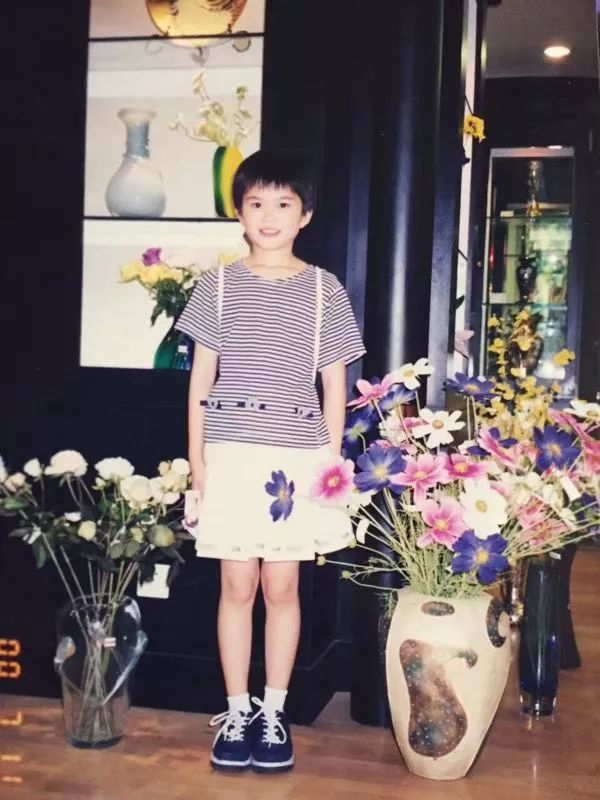
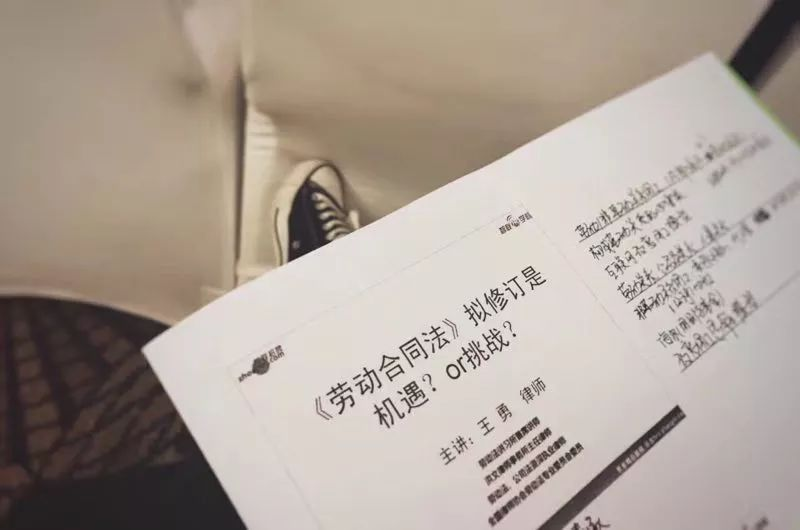
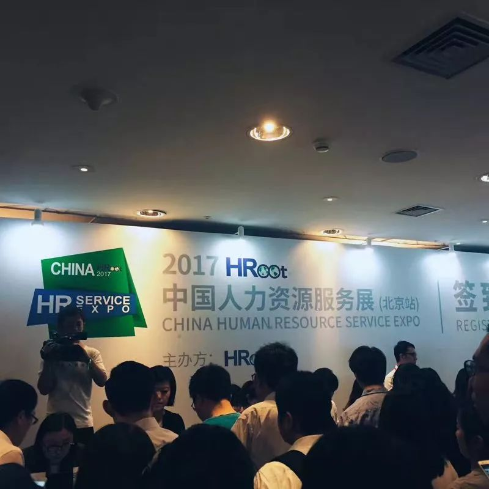

HR面试时，到底在想什么？｜杜杜的故事
消除就业性别歧视
诉说职场女性故事
快来加入我们
作者：CY
杜杜的职位是人力资源（简称HR）。她的工作内容是面试应聘者，挑选合适的人推荐给公司其它部门。
这份工作让她可以直接接触和了解企业如何看待性别歧视。
这是一位女HR的故事。

杜杜小时候
当杜杜去面试时。
第一次，面试官问到了杜杜的性格。
杜杜当时27岁。她介绍说自己比较容易融入集体，交往能力较强。面试官反问为什么还没有结婚，是不是性格有什么问题。
面试失败。
作者OS：
现在已经不流行结婚了，您不知道吗？很多年轻人已经识破了婚姻，明白它很大程度上是对人的束缚和捆绑，所以才不冒然结婚。
第二次，杜杜应聘的公司很符合她的期望。公司也对她很满意。
在谈工资的时候，面试官说：“男性需要的工资比较高，因为男性要养家，女性就不需要那么高的工资。”
面试官认为，男性比较有抱负，要竞争，而女孩只求安稳，二者给公司带来的绩效也是不一样的。
面试官的言下之意是给杜杜比较低的工资。
据理力争一番后，仍然是面试失败。
作者OS：
这个问题好像默认了大家都有家。即便如此，女性也要养家呀！
就是因为大家继续默认“男主外，女主内”的传统家庭结构，认为男性才应该是主要负责挣钱的一方，才导致了同工不同酬。
公司不鼓励女性，还责怪女性没有抱负。这显然不是对女性的支持。很多女性在如此艰难的社会环境下都能一展身手。这怕是让很多男人有了危机感吧。

劳动法相关的培训／杜杜摄
杜杜第三次面试的公司是海航旗下的公司。她想，这次的面试官应该有较高素质。
没想到面试官不重点问工作能力，一直问杜杜什么时候准备结婚。
杜杜表示她目前自己没有结婚计划。
谁知面试官开始说女性结婚、生孩子对公司会造成很多影响；女人结婚生孩子之后生活重心会放到孩子身上，肯定没有心思好好工作……
作者OS：
女性为什么会在结婚生孩子之后把生活重心放在孩子身上？
当国家没有公共托育服务，当公司把女性要生育做为负担，当女性缺少相同工资和发展机会，当女性需要负责家庭大小事，那孩子到底要有谁来照顾呢？
最终，生育的责任和负担只能由女性来承担。

中国人力资源服务展／杜杜摄
当杜杜成为一位HR后。
她的主要工作内容是面试别人。
她经常见到经常遇到应聘者中女孩比男孩情况合适向老板推荐但是不被采纳的情况，或者在助理等岗位，老板更想要招一个男性，重点培养。
作者OS：
为什么？女性到底要多优秀才行？你们对男性的要求到底有多低？
在需要出差，男性又比较多的岗位上，招女性会不方便、增加成本（例如加房间），而且女性会辛苦，即使在能力方面女性更胜一筹，老板也倾向于招男性。
作者OS： 为什么有些岗位男性比较多？这很可能存在结构性的问题，你们以保护女性为由拒绝录用女性。
出差的问题，女性自己会考虑的，大家都是成年人，公司只需写清楚岗位要求，她能接受出差才会去应聘，她的时间也很宝贵的。
杜杜的工作还在继续。
她还会继续观察职场中的性别歧视。
面对种种职业困境，我们可以努力突围——求助、举报、投诉——为自己争取合法权益。
你想为此出一份力吗？欢迎加入我们～
高铁窗外／杜杜摄
END

我们长期招募监察员，也长期接受投稿。
有意愿者，请和我们联系：
1）私信联系微博：@就业性别歧视监察大队；
2）私信微信公众号：就业性别歧视监察大队。
（推荐微博联系，微信恐无法及时回复～）